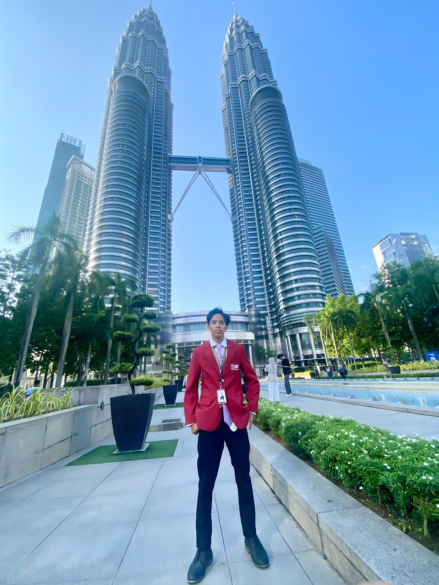
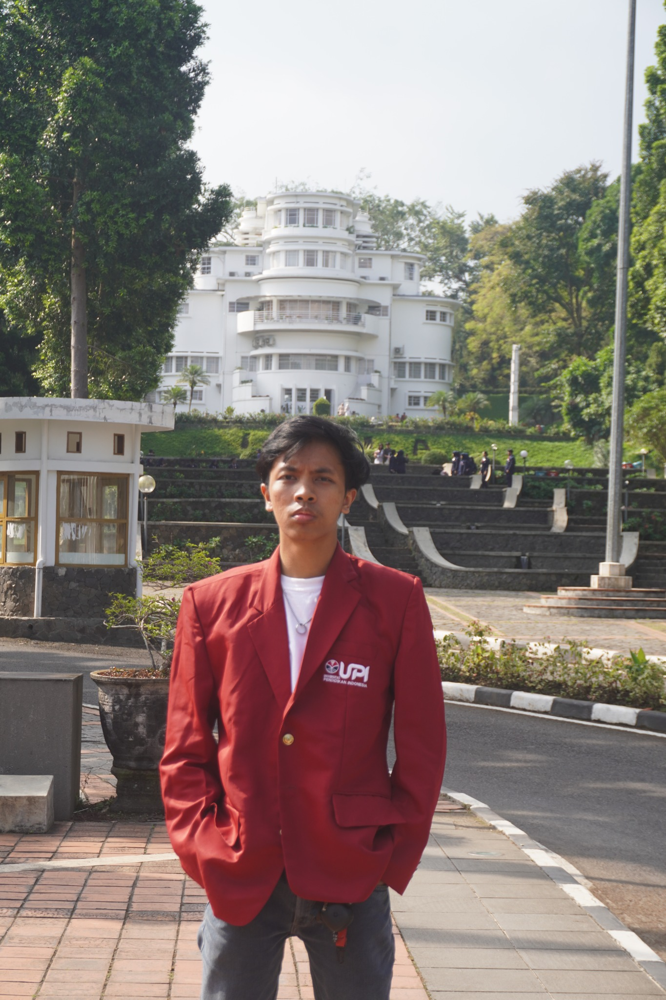

01 · Analytics
A
Supply Chain Analytics
Demand forecasting, inventory reasoning, dan keputusan operasional berbasis data.
Logistics Engineering · Supply Chain · Applied Research
Saya Mufid Hafidzurahman, mahasiswa Teknik Logistik di Universitas Pendidikan Indonesia. Saya tertarik pada analisis supply chain dan logistik internasional, dengan perhatian khusus pada konektivitas kepulauan serta dampak logistik bagi masyarakat.

Fokus saat ini
Fokus profesional yang menghubungkan analisis dengan kebutuhan nyata.
Demand forecasting, inventory reasoning, dan keputusan operasional berbasis data.
Freight forwarding, ekspor–impor, dan peran jaringan logistik menghubungkan pasar.
Penerapan pengetahuan logistik melalui pendidikan, riset, dan pemberdayaan masyarakat.
Selected work
Pilihan riset, teknologi, dan pendidikan. Status serta hasil akan dijelaskan setelah bukti diverifikasi.
Analisis sistem pergerakan komoditas kelapa sawit di Kalimantan Timur. Detail dan temuan akan ditambahkan setelah laporan diverifikasi.
Diskusikan proyek ↗Draf riset pemantauan real-time untuk operasi gudang. Status prototipe dan hasil uji perlu dikonfirmasi.
Diskusikan proyek ↗Buku edukasi yang memperkenalkan konsep logistik kepada siswa sekolah dasar. Peran dan dampak terukur perlu dilengkapi.
Lihat publikasi ↗Draf riset minyak jelantah sebagai bahan baku potensial biodiesel, bukan hasil produksi tervalidasi.
Diskusikan proyek ↗Draf riset tebu sebagai sumber energi alternatif. Metode, kontribusi, dan temuan menunggu dokumentasi.
Diskusikan proyek ↗Konten ini adalah seed awal. Setelah CMS terhubung, proyek dan artikel berasal dari Supabase; hanya konten published yang tampil untuk publik.

About me
Mahasiswa aktif semester 5 program studi Teknik Logistik di Universitas Pendidikan Indonesia. Berasal dari Bandung, Jawa Barat. Minat saya berfokus pada pengembangan Logistik Kepulauan, khususnya bagaimana logistik dapat menghubungkan berbagai wilayah, memperluas akses ekonomi, serta mendukung pembangunan yang lebih merata di Indonesia. Melalui pengalaman di bidang pendidikan, organisasi, penelitian, dan pemberdayaan masyarakat, saya berupaya mengintegrasikan logistik, pendidikan, dan pengembangan UMKM untuk menciptakan dampak berkelanjutan.
Experience & journey
Pengalaman terpilih dari kepemimpinan, laboratorium, dan kolaborasi.
Pengembangan organisasi, jejaring nasional, kemitraan akademisi–industri, dan riset kolaboratif.
Mengawasi kegiatan organisasi, pelaporan KPI, dan rekomendasi perbaikan.
Pengawasan organisasi dan alur advokasi; rincian tanggung jawab perlu verifikasi final.
Mendukung praktikum, latihan teknis, simulasi laboratorium, inventaris, dan dokumentasi.
Memfasilitasi pembicara dan audiens serta menjaga alur acara.
Mendukung sponsorship dan relasi mitra; klaim 5+ mitra perlu diverifikasi sebelum ditonjolkan.
A long-term direction
“Saya tidak memandang logistik hanya sebagai pergerakan barang. Saya melihatnya sebagai pergerakan peluang di seluruh kepulauan Indonesia.”
Resources & evidence
Tautan publik. Metadata yang belum diverifikasi perlu diperiksa sebelum dipromosikan.
Nomor berikut diberikan pemilik. Judul resmi dan metadata harus dicocokkan dengan sertifikat sebelum publikasi penuh.
Nomor ini belum menjadi tautan verifikasi resmi. Tambahkan sertifikat atau URL resmi melalui admin setelah diperiksa.
Logistics Innovation Lab
Lab menjadi lapisan interaktif terpisah. Modul ini masih preview, bukan alat operasional tervalidasi.
Jelajahi skenario distribusi dan trade-off jarak, waktu, serta biaya menggunakan data ilustratif berlabel jelas.
Grafik dan catatan analisis yang menjelaskan pertanyaan, sumber data, metode, interpretasi, serta keterbatasan.
Let's connect
Terbuka untuk networking profesional, diskusi riset, dan kolaborasi di bidang logistik dan supply chain.
Admin CMS
Dashboard admin termasuk ruang lingkup produk. Bagian ini adalah pratinjau spesifikasi, bukan login atau CMS aktif.
Jangan masukkan password asli di sini. Autentikasi admin harus menggunakan Supabase Auth dan Row Level Security (RLS) pada fase backend.
CRUD proyek, artikel, pengalaman, pencapaian, resources, bilingual fields, draft/published, preview, dan pengurutan.
Upload gambar, alt text, pemilihan foto hero, dan maksimal tiga proyek unggulan.
Inbox privat, status pesan, mitigasi spam, dan akses terbatas untuk admin.
Satu akun admin, signup publik nonaktif, konfigurasi environment, dan pengujian RLS.